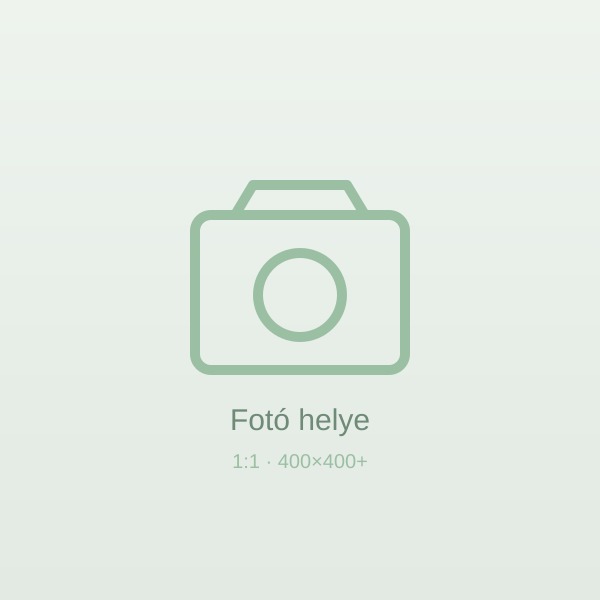
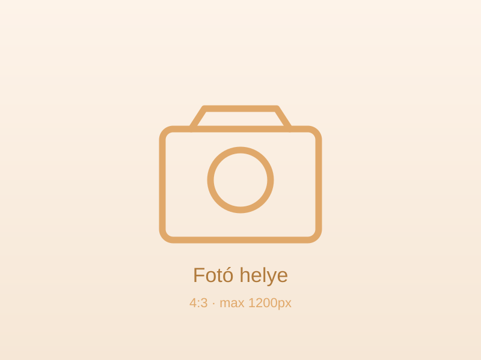
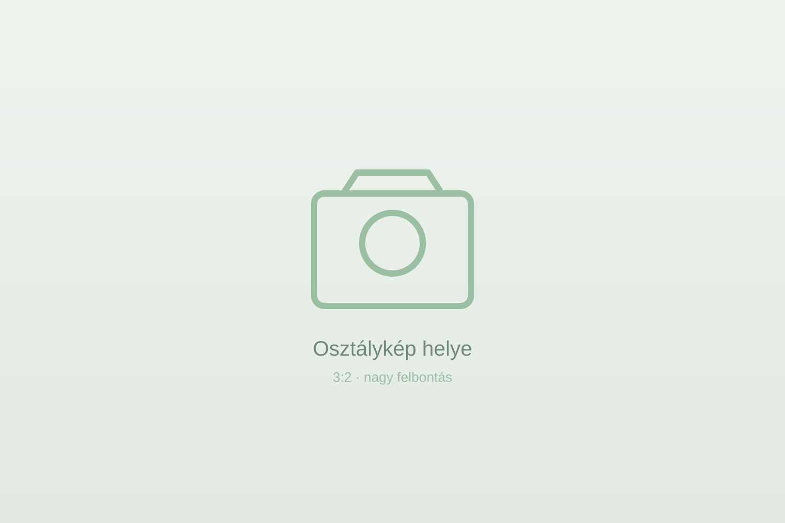

Születésnapok
Az osztály egész éve
Minden gyerek születési dátuma szerint, januártól decemberig. Egységes, négyzetes fotók, tiszta keretezésben.
Január

Anna
január 9.
Bence
január 23.
Február
Csenge
február 14.
Március
Dániel
március 3.
Eszter
március 27.
Április
Botond
április 14.
Május
Fanni
május 6.
Gergő
május 19.
Június
Hanna
június 30.
Augusztus
Levente
augusztus 11.
Szeptember
Mira
szeptember 2.
Noel
szeptember 25.
Október
Olívia
október 17.
November
Patrik
november 8.
December
Réka
december 21.
Osztálykirándulás
Balaton, 2024
Egy felejthetetlen nap a vízparton. 2024. május 15.

Az év pillanatai
Közös emlékek
Esemény és hónap szerint csoportosítva — a tanévünk legszebb pillanatai.
Zárás
Mi vagyunk a negyedik osztály

„Kedves Gyerekek! Négy év telt el, és ti olyan sokat nőttetek — nemcsak magasságban, hanem szívben és tudásban is. Köszönöm a sok közös nevetést, a kíváncsi kérdéseket és a kitartást. Bárhová is visz az utatok, vigyétek magatokkal ennek az osztálynak a melegségét.”
Szeretettel: a Tanító néni Negyedik osztály · 2024